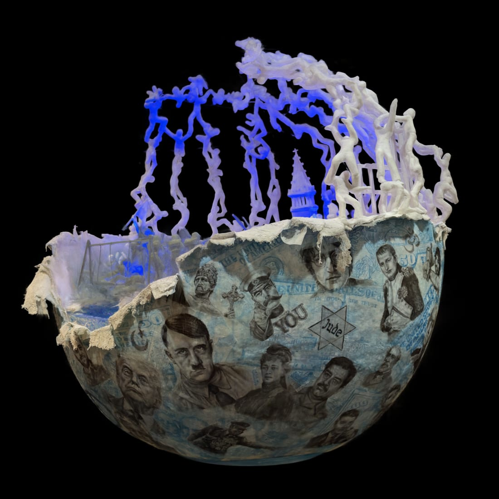

Installation, 2027
The Art of War and Peace
Foam, plaster, acrylic and graphite mixed medium installation, 48″ Globe, 2027
44 graphite portraits wrap a hollow globe.
Inside it, a sculpted landscape of war and renewal.
Turn it, look inside, and read every face.
Installations
12 works, 2022–2025
Portraits
Graphite, charcoal and pastel. Portraits of people, and of the animals they love.
Paintings
Oil, acrylic, pastel and watercolor, on canvas, paper and plexiglass.
01 / 19
-
Still LifeOil paint on canvas
-
Landscape 1Pastel painting on sanded paper
-
Lines of UkraineWatercolor on watercolor paper
-
TangledPastel on pastel paper
-
Tangled 2Pastel painting on sanded paper
-
TulipsPastel painting on sanded paper
-
Dream PonyColored pencil and watercolor painting on watercolor paper
-
Me Too…Graphite collage mixed medium
-
WhoAcrylic pour paint on canvas
-
WhispersAcrylic painting on canvas
-
The MaskPastel painting on sanded paper
-
Music ManWatercolor on plexiglass
-
KeyboardsWatercolor on plexiglass mixed medium
-
The VoiceWatercolor painting on plexiglass
-
Black Lives MatterAcrylic painting on canvas
Reference source: to come -
ChaplinWatercolor graphite mixed medium
-
Mother EarthWatercolor graphite mixed medium
-
See the TreesCollage Mixed Medium
-
The ForestAcrylic mixed medium painting
- All paintings